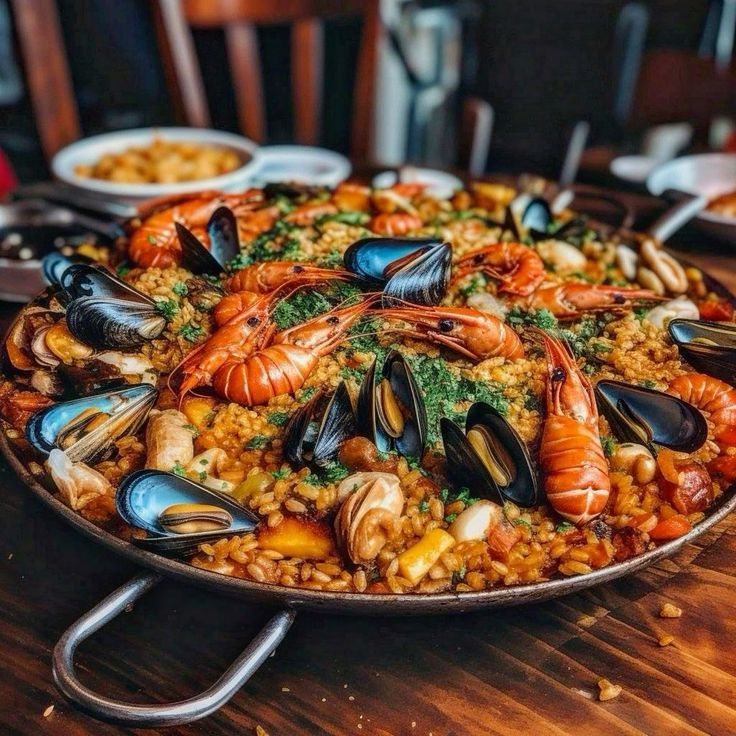

RECETAS DESTACADAS EN SABORES DEL MUNDO


CATEGORÍAS

¿Tienes una receta secreta?
Compártela con la comunidadOPINIONES DE USUARIOS
Ana L.
★★★★★
"La primera vez que pruebo el pitu de caleya, una receta perfecta."
Lorena z.
★★★★★
"El pulpo a la gallega estaba espectacular, ¡justo como en mi viaje a Galicia!"
Jorge G.
★★★★★
"Increible la fabada, nada que envidiar a la de muchos restaurantes."